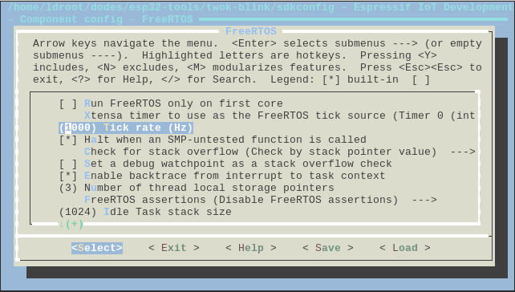
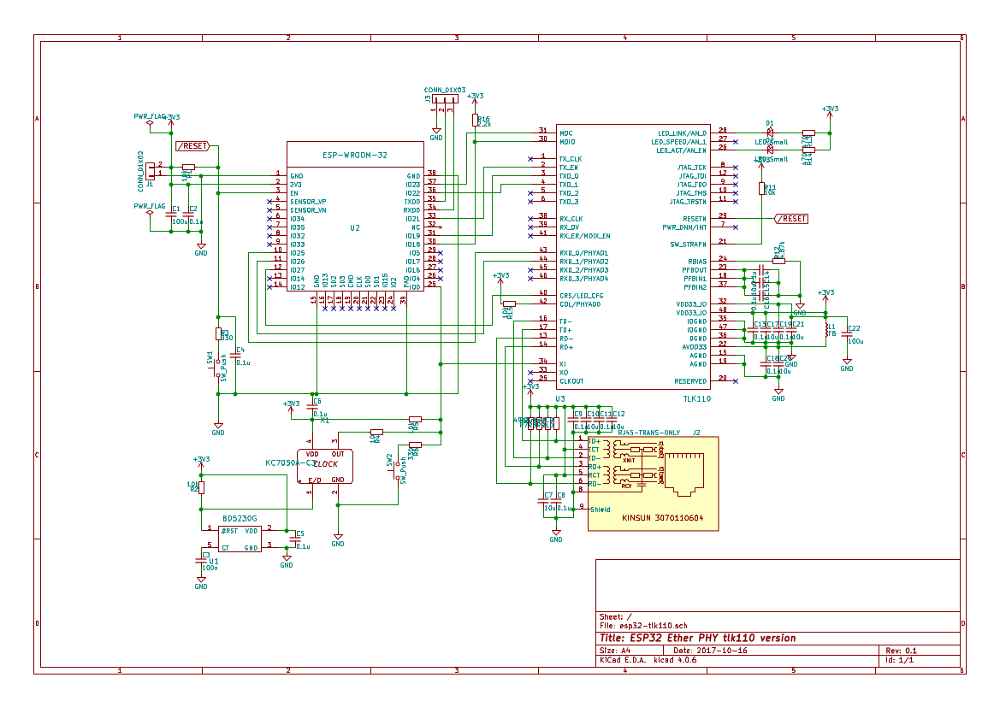

You know that the maximal tick rate in ESP-IDF is 1000Hz.

This is ok for almost applications and if you require sub-milli time precision, the extra timer or interrupt would be your friend.
But why can't be 2000Hz tick rate set on 240Mz CPU?
Here is a famous LED ...
I'm making a simple esp32 board with ethernet. ESP32 has MAC and esp-idf supports PHYs like LAN87x0 and TLK110 already. Here is the schematic with KiCAD:

I'll create a git repository for that hardware if it works.
gpio_config_tio_conf;io_conf.intr_type=GPIO_PIN_INTR_DISABLE;io_conf.mode=GPIO_MODE_OUTPUT;io_conf.pin_bit_mask=((1<<GPIO_LED_RED)|(1<<GPIO_LED_GREEN)|(1<<GPIO_LED_BLUE));io_conf.pull_down_en=0;// This ensures that all leds are off in deep sleep ...
My ESP-WROOM-32 board has 2 spi slave devices MPU-9250 and MS5611. I've troubled with DMA on spi. It looks issue 598 which happens when DMA is used with the half-duplex mode and the command/address phases are disabled.
With enabling command phase, the problem went away.